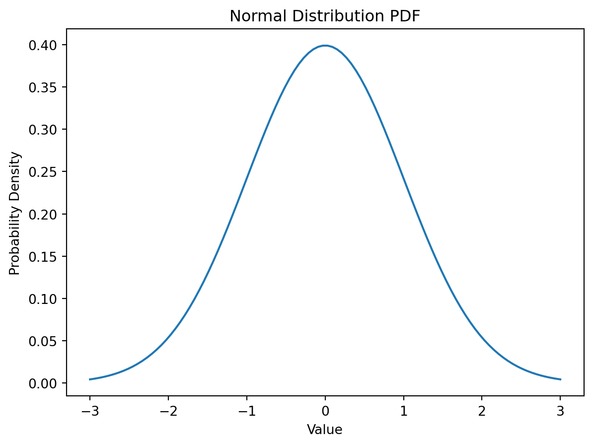

import numpy as np
from scipy.stats import binom
# Define parameters
n = 10 # Number of trials
p = 0.5 # Probability of success in each trial
# Generate binomial random variables
rv = binom(n, p)
# Probability Mass Function (PMF)
x = np.arange(0, n+1)
pmf = rv.pmf(x)
# Plot the PMF
import matplotlib.pyplot as plt
plt.bar(x, pmf)
plt.xlabel('Number of Successes')
plt.ylabel('Probability')
plt.title('Binomial Distribution PMF')
plt.show()
Definition
Probability theory is the mathematical study of uncertainty. It plays a central role in machine learning, as the design of learning algorithms often relies on probabilistic assumption of the data. This set of notes attempts to cover some basic probability theory that serves as a background for the class.
Probability Space
When we speak about probability, we often refer to the probability of an event of uncertain nature taking place. For example, we speak about the probability of rain next Tuesday. Therefore, in order to discuss probability theory formally, we must first clarify what the possible events are to which we would like to attach probability.
Formally, a probability space is defined by the triple (Ω, F, P), where
• Ω is the space of possible outcomes (or outcome space),
• F ⊆ 2^Ω (the power set of Ω) is the space of (measurable) events (or event space),
• P is the probability measure (or probability distribution) that maps an event E ∈ F to a real value between 0 and 1 (think of P as a function).
Given the outcome space Ω, there is some restrictions as to what subset of 2^Ω can be considered an event space F:
• The trivial event Ω and the empty event ∅ is in F.
• The event space F is closed under (countable) union, i.e., if α, β ∈ F, then α ∪ β ∈ F.
• The even space F is closed under complement, i.e., if α ∈ F, then (Ω α) ∈ F.
Example 1. Suppose we throw a (six-sided) dice. The space of possible outcomes Ω = {1, 2, 3, 4, 5, 6}. We may decide that the events of interest is whether the dice throw is odd or even. This event space will be given by F = {∅, {1, 3, 5}, {2, 4, 6}, Ω}.
Note that when the outcome space Ω is finite, as in the previous example, we often take the event space F to be 2Ω. This treatment is not fully general, but it is often sufficient for practical purposes. However, when the outcome space is infinite, we must be careful to define what the event space is.
Given an event space F, the probability measure P must satisfy certain axioms.
• (non-negativity) For all α ∈ F, P(α) ≥ 0.
• (trivial event) P(Ω) = 1.
• (additivity) For all α, β ∈ F and α ∩ β = ∅, P(α ∪ β) = P(α) + P(β).
Example 2. Returning to our dice example, suppose we now take the event space F to be 2Ω. Further, we define a probability distribution P over F such that
P({1}) = P({2}) = · · · = P({6}) = 1/6
then this distribution P completely specifies the probability of any given event happening (through the additivity axiom). For example, the probability of an even dice throw will be
P({2, 4, 6}) = P({2}) + P({4}) + P({6}) = 1/6 + 1/6 + 1/6 = 1/2
since each of these events are disjoint.
Random Variables
Random variables play an important role in probability theory. The most important fact about random variables is that they are not variables. They are actually functions that map outcomes (in the outcome space) to real values. In terms of notation, we usually denote random variables by a capital letter. Let’s see an example.
Example 3. Again, consider the process of throwing a dice. Let X be a random variable that depends on the outcome of the throw. A natural choice for X would be to map the outcome i to the value i, i.e., mapping the event of throwing an “one” to the value of 1. Note that we could have chosen some strange mappings too. For example, we could have a random variable Y that maps all outcomes to 0, which would be a very boring function, or a random variable Z that maps the outcome i to the value of 2^i if i is odd and the value of −i if i is even, which would be quite strange indeed.
In a sense, random variables allow us to abstract away from the formal notion of event space, as we can define random variables that capture the appropriate events. For example, consider the event space of odd or even dice throw in Example 1. We could have defined a random variable that takes on value 1 if outcome i is odd and 0 otherwise. These type of binary random variables are very common in practice, and are known as indicator variables, taking its name from its use to indicate whether a certain event has happened. So why did we introduce event space? That is because when one studies probability theory (more 2 rigorously) using measure theory, the distinction between outcome space and event space will be very important. This topic is too advanced to be covered in this short review note.In any case, it is good to keep in mind that event space is not always simply the power set of the outcome space.
From here onwards, we will talk mostly about probability with respect to random variables. While some probability concepts can be defined meaningfully without using them, random variables allow us to provide a more uniform treatment of probability theory. For notations, the probability of a random variable X taking on the value of a will be denoted by either
P(X = a) or Px(a)We will also denote the range of a random variable X by V al(X).
Probability Distribution
Probability distributions are fundamental to understanding random variables in statistics and probability theory. They provide a systematic way to describe the likelihood of different outcomes from a random process. Let’s explore this concept in detail for both discrete and continuous random variables:
Probability Distributions for Discrete Random Variables
Probability Mass Function (PMF):
The PMF is a function that gives the probability that a discrete random variable is exactly equal to some value. It satisfies two conditions: The sum of probabilities for all possible outcomes equals 1, and the probability for each individual outcome is between 0 and 1.
Key Discrete Distributions:
Binomial Distribution: Models the number of successes in a fixed number of independent Bernoulli trials (like flipping a coin several times). It is characterized by two parameters: the number of trials (n) and the probability of success (p) in each trial.
Poisson Distribution: Used for counting the number of events that occur in a fixed interval of time or space. It is characterized by its rate parameter (λ), which is the average number of events in the given interval.
import numpy as np
from scipy.stats import poisson
# Define rate parameter (average events in the interval)
lambda_ = 3.0
# Generate Poisson random variables
rv = poisson(mu=lambda_)
# Probability Mass Function (PMF)
x = np.arange(0, 11) # Example: Counting events from 0 to 10
pmf = rv.pmf(x)
# Plot the PMF
import matplotlib.pyplot as plt
plt.bar(x, pmf)
plt.xlabel('Number of Events')
plt.ylabel('Probability')
plt.title('Poisson Distribution PMF')
plt.show()Geometric Distribution: Describes the number of Bernoulli trials needed to get one success. Its key parameter is the probability of success (p) in each trial.
import numpy as np
from scipy.stats import geom
# Define probability of success in each trial
p = 0.2
# Generate Geometric random variables
rv = geom(p)
# Probability Mass Function (PMF)
x = np.arange(1, 11) # Number of trials needed (1 to 10)
pmf = rv.pmf(x)
# Plot the PMF
import matplotlib.pyplot as plt
plt.bar(x, pmf)
plt.xlabel('Number of Trials Needed')
plt.ylabel('Probability')
plt.title('Geometric Distribution PMF')
plt.show()Probability Distributions for Continuous Random Variables
**Probability Density Function (PDF):
The PDF is used to specify the probability of the random variable falling within a particular range of values, as opposed to taking on any one specific value. The probability for any single point is zero for a continuous distribution. Instead, the area under the PDF curve within a range of values indicates the probability of falling within that range.
Key Continuous Distributions:
Normal (Gaussian) Distribution: One of the most important probability distributions, known for its bell-shaped curve. It is characterized by two parameters: the mean (μ), which indicates the center of the distribution, and the standard deviation (σ), which measures the spread.
import numpy as np
from scipy.stats import norm
# Define parameters
mu = 0 # Mean
sigma = 1 # Standard Deviation
# Generate normal random variables
rv = norm(loc=mu, scale=sigma)
# Probability Density Function (PDF)
x = np.linspace(-3, 3, 100) # Range of values
pdf = rv.pdf(x)
# Plot the PDF
import matplotlib.pyplot as plt
plt.plot(x, pdf)
plt.xlabel('Value')
plt.ylabel('Probability Density')
plt.title('Normal Distribution PDF')
plt.show()
Exponential Distribution: Used to model the time elapsed between events in a process with a constant average rate (e.g., radioactive decay). It is characterized by its rate parameter (λ).
import numpy as np
from scipy.stats import expon
# Define rate parameter (λ)
lambda_ = 0.5
# Generate Exponential random variables
rv = expon(scale=1/lambda_)
# Probability Density Function (PDF)
x = np.linspace(0, 10, 100) # Range of values
pdf = rv.pdf(x)
# Plot the PDF
import matplotlib.pyplot as plt
plt.plot(x, pdf)
plt.xlabel('Time')
plt.ylabel('Probability Density')
plt.title('Exponential Distribution PDF')
plt.show()Uniform Distribution: Describes a situation where all outcomes are equally likely. In its continuous form, it’s defined by two parameters, a and b, which are the minimum and maximum values of the distribution.
import numpy as np
from scipy.stats import uniform
# Define parameters
a = 0 # Minimum value
b = 1 # Maximum value
# Generate Uniform random variables
rv = uniform(loc=a, scale=b-a)
# Probability Density Function (PDF)
x = np.linspace(a-0.1, b+0.1, 100) # Range of values
pdf = rv.pdf(x)
# Plot the PDF
import matplotlib.pyplot as plt
plt.plot(x, pdf)
plt.xlabel('Value')
plt.ylabel('Probability Density')
plt.title('Uniform Distribution PDF')
plt.show()